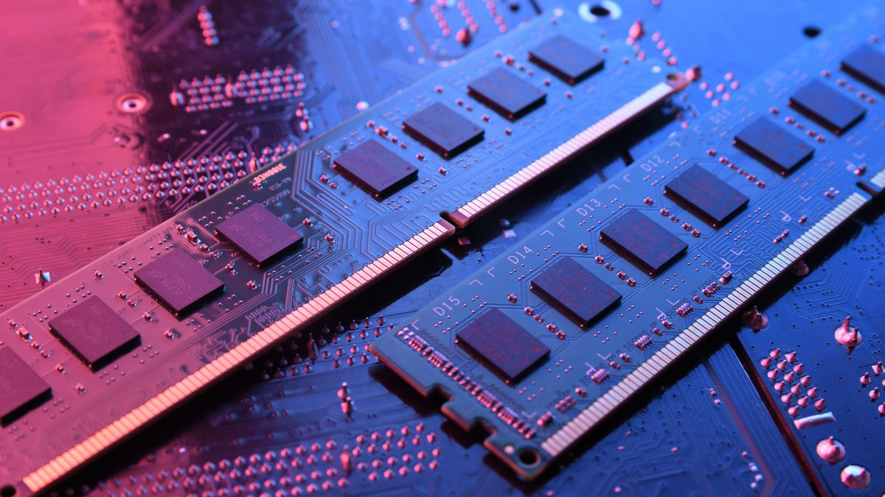

Build Your Own
Cases
There are many design of cases, but compose of many form factors as in sizes, such as:

Mini-ITX: Mini-ITX cases are the smallest form factor, designed for compact builds. They typically support mini-ITX motherboards and have limited space for components but are ideal for small form factor (SFF) builds or HTPCs (Home Theater PCs).
Micro-ATX: Micro-ATX cases are slightly larger than mini-ITX but still compact. They support micro-ATX motherboards and often offer more expansion slots and space for components compared to mini-ITX cases. Micro-ATX cases strike a balance between size and flexibility, suitable for budget builds or small gaming rigs.
Full-Tower: Full-tower cases are larger and offer more space than mid-tower cases. They support extended ATX (E-ATX) motherboards and provide ample room for multiple graphics cards, storage drives, custom water cooling loops, and other high-end components. Full-tower cases are ideal for enthusiasts and users who require extensive customization options and maximum expandability.
Mid-Tower: Mid-tower cases are the most common form factor, offering a good balance of size, features, and compatibility. They support standard ATX motherboards and provide ample room for components, cooling solutions, and expansion cards. Mid-tower cases are versatile and widely used for gaming, workstation, or enthusiast builds.
Motherboard
Motherboards are the backbone of any computer system, serving as the central hub that connects all the essential components together. Think of it as the nervous system of a computer, coordinating communication between the CPU, RAM, storage devices, graphics card, and other peripherals. Motherboards provide physical and electrical connections for these components, ensuring they can interact seamlessly. They come in various sizes and form factors, accommodating different types of processors, memory modules, and expansion cards. Additionally, motherboards house important interfaces such as USB ports, audio jacks, and networking connectors, facilitating external connectivity. Furthermore, they often feature specialized components like chipset controllers and power delivery systems to optimize performance and stability. For beginners, understanding motherboards involves recognizing their pivotal role in constructing a computer system and how their design influences compatibility and overall functionality.
Graphics card
GPUs, or Graphics Processing Units, serve as powerhouse components in computers primarily designed to handle tasks related to graphics and visual processing. However, their purpose extends beyond just rendering images for games or videos. GPUs excel in parallel processing, meaning they can perform multiple tasks simultaneously, making them indispensable for tasks like complex scientific simulations, machine learning, and cryptocurrency mining. Their ability to handle massive amounts of data in parallel enables faster computations, making them essential for accelerating various computational tasks beyond traditional graphics rendering. In essence, for beginners, understanding GPUs involves recognizing them as specialized processors that significantly boost performance in tasks requiring heavy computation, from gaming to scientific research.
CPU

CPUs, or Central Processing Units, are the brain of a computer, responsible for executing instructions and performing calculations for a wide range of tasks. Unlike GPUs, which specialize in parallel processing, CPUs excel in sequential processing, executing instructions in a step-by-step manner. They handle essential operations such as arithmetic, logic, input/output, and control tasks necessary for the functioning of the entire system. CPUs are crucial for everyday computing tasks like web browsing, word processing, and running applications. Additionally, they play a critical role in multitasking, efficiently managing multiple processes simultaneously by rapidly switching between them. Essentially, for beginners, understanding the CPU involves recognizing it as the core component that drives the basic operations of a computer, orchestrating the execution of instructions to accomplish diverse computing tasks effectively.
RAM
Random Access Memory, or RAM, is a fundamental component of a computer system responsible for temporarily storing data that the CPU needs to access quickly. Unlike storage devices such as hard drives or SSDs, which retain data even when the power is turned off, RAM is volatile memory, meaning it loses its contents when the power is cut. RAM serves as a high-speed workspace where the CPU can quickly read and write data during program execution. This allows for faster access to frequently used instructions and data, significantly improving overall system performance. The amount of RAM in a computer directly impacts its multitasking capabilities and the smoothness of running applications. Additionally, the speed and type of RAM can affect system performance, with faster and more advanced RAM types providing quicker data access. In essence, for beginners, understanding RAM involves recognizing it as the temporary storage that enables efficient data processing and multitasking within a computer system.
Power Supply Unit

The power supply unit (PSU) is a critical component of a computer system responsible for converting electrical power from an outlet into usable power for the various components inside the computer. It provides stable and reliable power to the motherboard, CPU, graphics card, storage drives, and other peripherals. The PSU delivers different voltages and currents required by these components, ensuring they receive the necessary power to function optimally.
PSUs come in various wattages to accommodate different levels of power consumption, with higher wattage units being capable of supporting more powerful components or multiple graphics cards in a system. They also feature various efficiency ratings, indicating how effectively they convert AC power from the outlet into DC power for the computer's components.
Efficiency ratings such as 80 PLUS Bronze, Silver, Gold, Platinum, and Titanium signify different levels of energy efficiency, with higher ratings indicating less wasted energy and lower electricity bills.Additionally, PSUs incorporate safety features such as overvoltage protection, undervoltage protection, overcurrent protection, and short-circuit protection to safeguard the computer components from electrical damage in case of power fluctuations or malfunctions.
Build Video Guide
The video above offers a comprehensive guide on assembling a PC in 2024, serving as an invaluable resource for enthusiasts keen on learning the ropes of building their own systems. However, beyond mere assembly instructions, there exist indispensable tools like PcPartPicker. This platform goes beyond mere guidance, aiding users in meticulously selecting the optimal components for their builds. From assessing compatibility to price comparison, PcPartPicker streamlines the entire process, alerting users to potential pitfalls such as compatibility issues or erroneous component selections. With its intuitive interface and robust features, PcPartPicker stands as an essential companion for anyone venturing into the realm of DIY PC building in 2024.